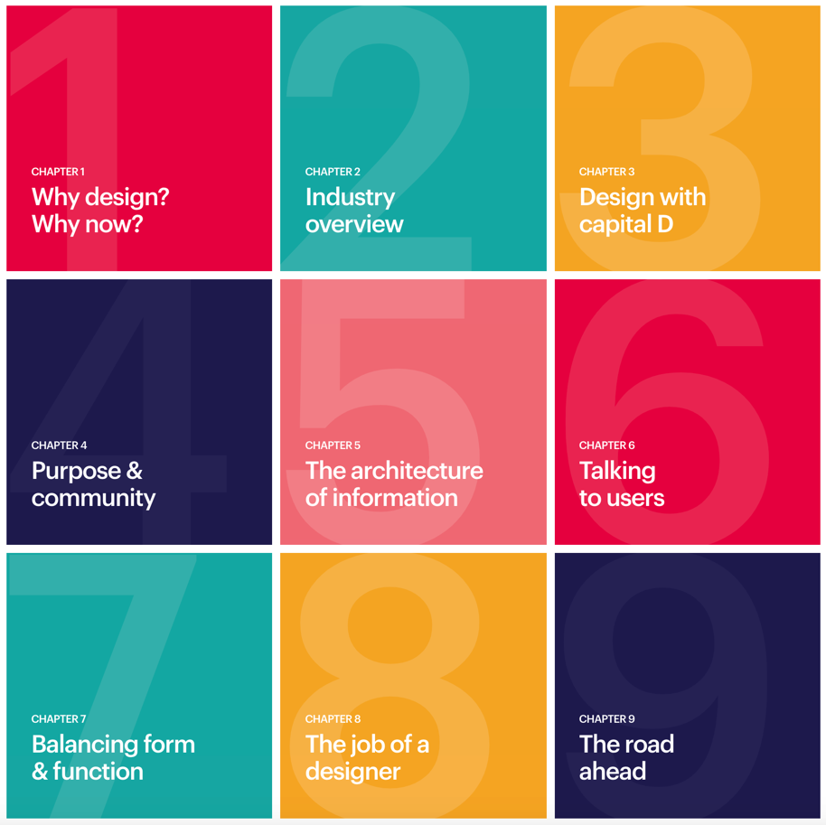
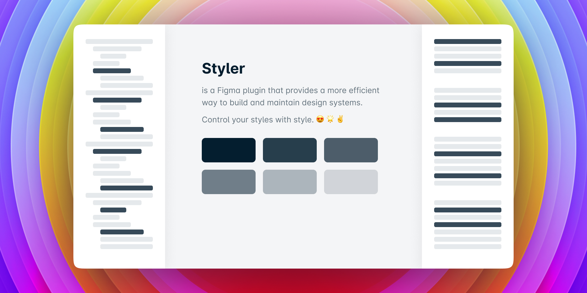
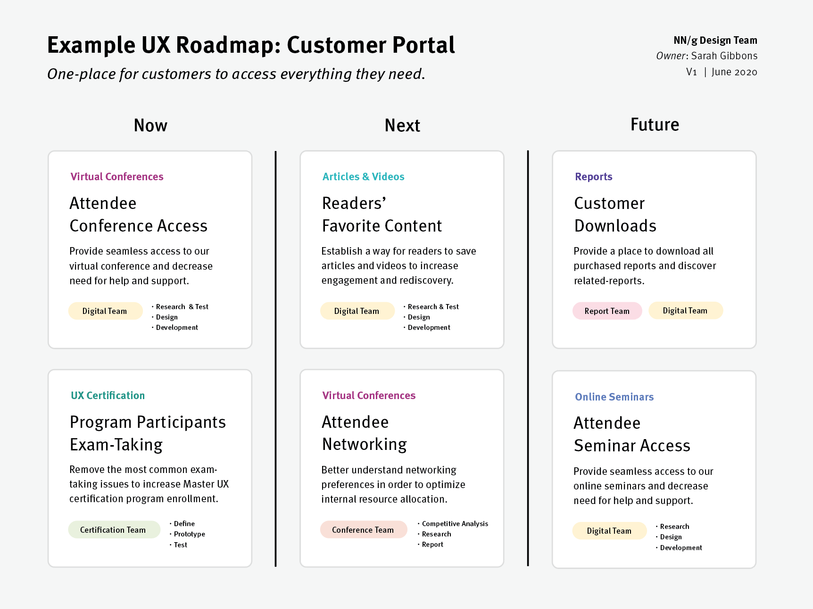
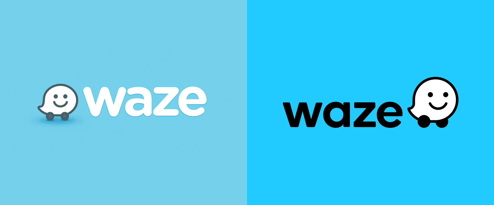

设计周刊 Design Weekly #15
🏷 设计资源
The Guide to Design
一个系统的自学课程，帮你入门用户体验，并回答有关工艺，设计和职业生涯的关键问题。

🏷 设计工具
Styler
https://www.figma.com/community/plugin/820660579767995949/Styler
可以自动生成样式的 figma 插件。

🏷 设计灵感
激发灵感的精选网站列表
https://whimsical.club/?ref=sidebar
这个网站的目的是为了展示个性化的网络是怎样的，希望能给大家一些灵感，让你自己的网络世界变得更怪异一些，啊哈。
下图为 Simone Marzulli 的个人网站，Win95时代复古时光，他在网站中对细节的关注是惊人的。如果感兴趣，请点击垃圾桶试一下。

🏷 设计文章
用户体验地图的定义和组成，来自尼尔森诺曼集团研究报告
https://www.nngroup.com/articles/ux-roadmaps/?ref=sidebar
1987年，摩托罗拉公司提出了 “技术路线图 “管理方法，对产品开发任务进行规划。20世纪90年代初，路线图作为一种规划和沟通的工作方式，在硬件和软件公司中逐渐流行起来。其作为一种工具和方法在经营和研发过程中不断发展、完善。
这是一篇介绍路线图在用户体验中的使用的文章。

🏷 设计新闻
世界最受欢迎导航应用 Waze 的新品牌形象
Waze成立于2006年，是世界上最受欢迎的导航应用之一，在180多个国家拥有1.3亿用户。上周，Waze 推出了由纽约 Pentagram 合伙人 Natasha Jen 设计的新形象。Wazer 形象采用了更圆润、更直立的外形，轮子放在两边，使其有层次感。同时这个造型更清晰地暗示了一个语音气泡，强调了该应用对沟通的关注。让我们来看看这个可爱的小胖子是不是更轻盈了。

🏷 随便看看
Lights and Shadows，光与影
https://ciechanow.ski/lights-and-shadows/?ref=sidebar
形容光影的关系是一件很难的事，看看作者Bartosz Ciechanowski 是如何通过黑暗来展示光与影的。